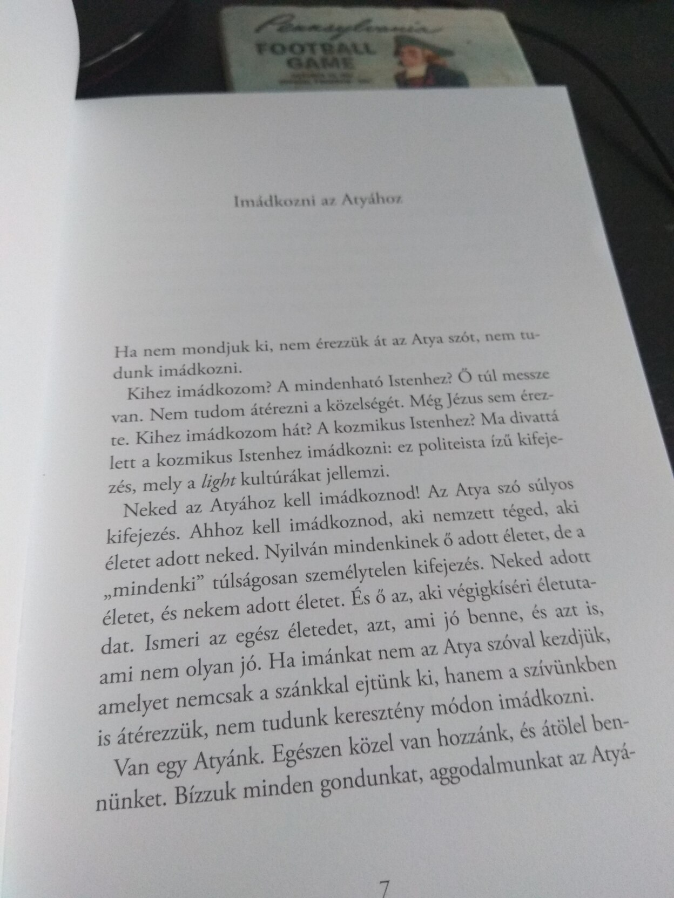

Mai munkahely
100% COVID-kompatibilis, sehol egy lélek
- Tovább (Mai munkahely)
- A hozzászóláshoz regisztráció és bejelentkezés szükséges
100% COVID-kompatibilis, sehol egy lélek

Pár napja érkezett előrendelésből ez a gyönyörű könyv, az elkövetkezendő hetekben remélem végigolvashatom!
Nemrégiben eltörött a hallókészülék-illesztékem műanyag csöve. Végigjártam a nagy hallókészülék-szalonokat a XI. kerületben, nem tudtak segíteni, sőt, aznap még új mintát sem tudtak levenni, hogy új illesztéket készíthessenek. Szerencsére végül 4-5 üzlet után eljutottam a Microsonic-hoz, ahol rögtön kicserélték a törött csövet, vettek mintát az új darabhoz, tehát megkíméltek egy hét hallókészülék nélküli léttől, ezért némi reklámot megérdemelnek. Illesztékben ők a legprofibbak valószínűleg a környéken.
Ha nem is sok látszik belőle, a blog végre a legújabb Drupal 8-as stabil kiadásával üzemel, valamint a PHP verzió is át lett állítva 7.3-asra. Egyik frissítés sem okozott semmi galibát, bár hozzá kell tenni, hogy csak core modulok vannak bekapcsolva, így nem nehéz persze. Kikerült a Twitter-doboz is (újra) az oldalsávba, ez a másik nyilvánosan elérhető csatorna, amit aktívan használok.
https://twitter.com/NovakAron/status/1093493650850529281
INTEL DQ67SW
Intel s1155 Core i7-2600 3,40GHz/8MB BOX
Corsair DDR3 Vengeance CMZ16GX3M4A1600C9 16GB KIT
CORSAIR CX CMPSU-500CXV2EU 500W
Corsair SATA3 2.5" 120GB Force GT (CSSD-F120GBGT-BK)
Samsung SSD 850 PRO 256GB
ATX CORSAIR Graphite Series CC600T Black
Asus PRIME Z390M-PLUS (micro-ATX, LGA 1151, Intel Z390)
Intel Core i9-9900K 3,6 GHz (16 MB) LGA 1151 CPU Box
32 GB DDR4 SDRAM 2400 MHz Corsair Vengeance LPX Black
S3 Zalman S3
C0024366 Chieftec Smart 600 W
1 TB Samsung 970 EVO NVMe SSD (M.2, 2280, PCIe)
Cooler Master Hyper TX3I EVO
Elkezdtem dolgozni egy kis hobbi-projekten, ami a GitHub-os automata tesztek alapján próbál valami összefüggést mondani egy konkrét fejlesztő hatékonyságára napszakok / napok, általában véve valamiféle időintervallum alapján, a célok:
https://github.com/AronNovak/github-status-stats/commit/3e6fcf27d2ede39…
.
Habár szerintem ma már leginkább csak a keresőrobotok olvassák ezt a személyes honlapot, ide is belinkelem: https://ingatlan.com/xi-ker/elado+lakas/panel-lakas/budapest+11+kerulet+frakno+utca/27310008
Költözünk, s együttal eladó lett a lakásunk, furcsa érzés kipakolni az embernek a fotókat, nem lehet úgy megcsinálni, hogy ne legyen túl személyes, de a lényeg, akinek érdekes, hívjon mielőbb!
Miután olvastam a VPNFilterről (https://en.wikipedia.org/wiki/VPNFilter), ránéztem az otthoni és az irodai routerekre. Egyikre se tudtam bejelentkezni az admin felhasználóval a jelszótárolóba elmentett jelszóval. Ezen felbuzdulva eldöntöttem, hogy akár fertőzőtt, akár nem, a gyári firmware-nek mennie kell. A feltöltés nem olyan bonyolult, épp most várom, hogy újrainduljon az új firmware-rel.
Ha azt hiszed, hogy a YouTube-csatorna szereplők, a tartalomelőállítók élete gyerekjáték, próbálj meg egyszer felvenni egy kötetlen beszélgetést, pláne nem az anyanyelveden, szerintem meg fog változni a véleményed! Velem legalábbis így történt, miközben a https://www.gizra.com/podcast/evolution-distributed-company/ podcast-on dolgoztunk Orit-tal és Adam-mal.